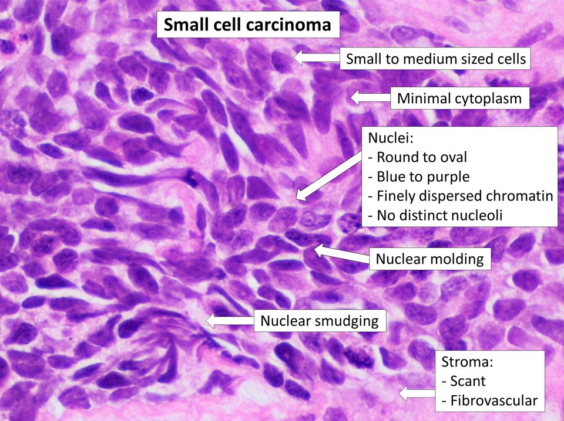

General information only. It does not replace advice from your care team and should not be used to choose a treatment.


At a glance
| How common | 13-15% of lung cancers |
| Cause | Tobacco in over 95% |
| Behaviour | Grows very fast and spreads early (brain, liver, bone) |
| Stages | Limited (one side of the chest) or extensive (two in three at diagnosis) |
| Treatment | Chemoradiotherapy for limited; chemo-immunotherapy for extensive |
What it is
Small cell lung cancer ("oat cell") is a high-grade neuroendocrine tumour. Its cells divide very quickly, so the disease has usually spread by diagnosis. It almost always loses the tumour suppressor genes TP53 and RB1.
Symptoms
Cough, breathlessness, chest pain, weight loss. It often causes paraneoplastic syndromes: excess antidiuretic hormone (low blood sodium, with confusion), Cushing syndrome, or autoimmune neurological syndromes such as Lambert-Eaton myasthenic syndrome. Superior vena cava syndrome is also typical.
Diagnosis
CT of chest and abdomen, brain MRI (brain metastases are very common), PET-CT if it seems limited, and biopsy, often by bronchoscopy or EBUS.
Treatment
Limited stage (a third of cases): - Chemotherapy with cisplatin or carboplatin and etoposide together with early chest radiotherapy. - Afterwards, durvalumab for two years, which in the ADRIATIC trial (2024) clearly improved overall survival. - Prophylactic cranial irradiation or MRI surveillance, to prevent or detect brain metastases early. - Surgery only for very small tumours without nodes.
Extensive stage: - Chemotherapy with immunotherapy (atezolizumab or durvalumab), which increases the share of long-term survivors. - At relapse: lurbinectedin, topotecan, or the bispecific antibody tarlatamab (targeting DLL3), which in the DeLLphi-304 trial (2025) improved survival compared with chemotherapy. - Palliative radiotherapy to brain or bone metastases.
Outlook
The initial response is high (60-80%), but it usually relapses within months. Five-year survival is 25-35% for limited disease treated with curative intent and low for extensive disease, although immunotherapy has allowed some patients to live for years.
Prevention
Almost all cases would be avoided without tobacco. Quitting is still worthwhile after diagnosis.
See also: Lung cancer, Lung carcinoid tumours, Immunotherapy.
History · Medicapedia
Small cell lung cancer in the history of medicine
How it was discovered, who studied it and how its treatment changed over the centuries, told on Medicapedia, our sister site on the history of medicine.
Read the history on Medicapedia ↗Sources
- Dingemans AC, et al. Small-cell lung cancer: ESMO Clinical Practice Guidelines. Ann Oncol. 2021;32:839-853. doi:10.1016/j.annonc.2021.03.207
- Cheng Y, et al. Durvalumab after chemoradiotherapy in limited-stage small-cell lung cancer (ADRIATIC). N Engl J Med. 2024;391:1313-1327. doi:10.1056/NEJMoa2404873
- Horn L, et al. First-line atezolizumab plus chemotherapy in extensive-stage small-cell lung cancer (IMpower133). N Engl J Med. 2018;379:2220-2229. doi:10.1056/NEJMoa1809064
- Mountzios G, et al. Tarlatamab in small-cell lung cancer after platinum-based chemotherapy (DeLLphi-304). N Engl J Med. 2025.
- NCI. Small cell lung cancer treatment (PDQ). cancer.gov/types/lung